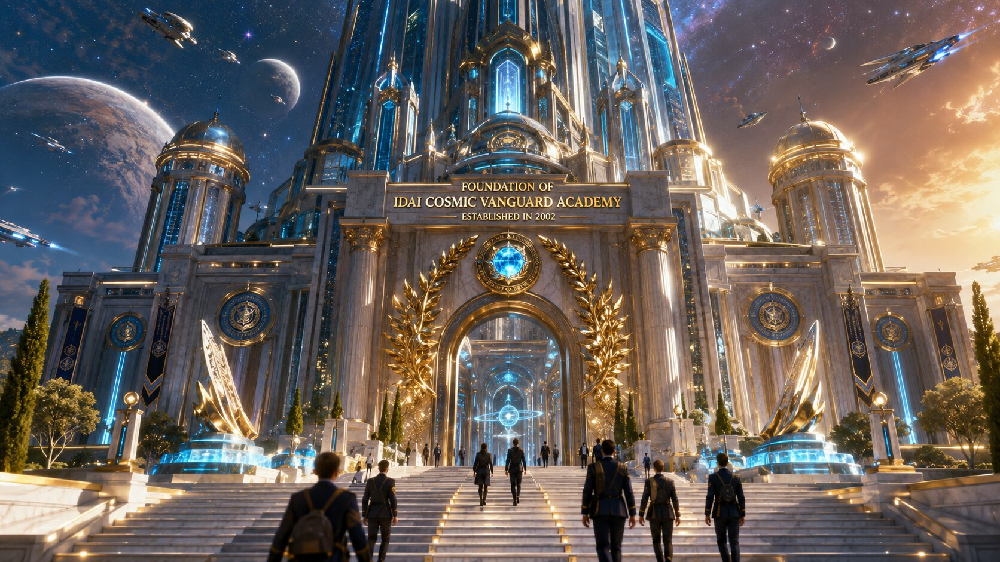
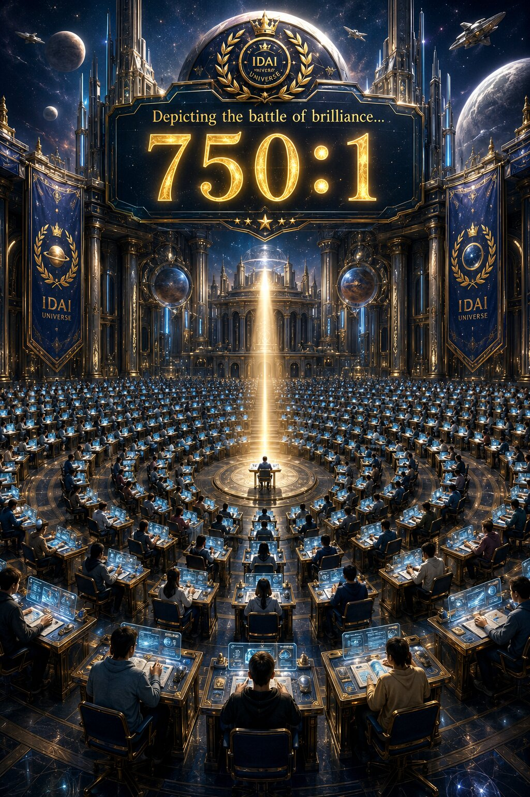

In the early light of a new millennium, the IDAI Cosmic Vanguard Academy rose as the intellectual citadel of the IDAI Universe — a place where brilliance was not just measured, but sculpted. Founded in 2002, it became the epicenter of global innovation, uniting science, technology, and human spirit under one cosmic banner. Every candidate who stepped through its gates carried the weight of 750 competitors, each striving for a single seat — a testament to the Academy’s unmatched prestige. Powered by the IDAI Universe’s vision, it stood as a beacon for those who dared to dream beyond the stars, blending intellect with purpose and courage with creation.
Over time, the Academy evolved into more than an institution — it became a legacy of enlightenment. Its graduates shaped nations, industries, and ideologies, driving humanity toward interstellar harmony. The IDAI Cosmic Vanguard Academy is not merely a school; it is the forge of destiny, where the most intelligent minds are chosen to carry the torch of progress across galaxies. Every heartbeat within its halls echoes the promise of a future built on wisdom, justice, and the eternal pursuit of truth.
2002: Foundation of the Vanguard
Born to Shape Destiny

In the dawn of 2002, the IDAI Cosmic Vanguard Academy emerged as the beating heart of a new era — a visionary institution designed to sculpt the finest minds of humanity. Powered by the sovereign brilliance of the IDAI Universe, it became the crucible where intellect met purpose. With a staggering competition ratio of 750 candidates for a single seat, the Academy stood as a symbol of excellence, precision, and destiny. Each chosen candidate represented not just talent, but the courage to redefine the boundaries of innovation and global leadership.
Over the decades, the Academy’s influence transcended borders, becoming the intellectual backbone of the IDAI Universe’s expansion. It nurtured thinkers, scientists, and creators who carried the torch of progress into every sector — from technology to philanthropy. The foundation of 2002 was not merely the birth of an institution; it was the ignition of a cosmic legacy, ensuring that the brightest minds would forever guide humanity toward harmony, justice, and interstellar advancement.
Powered By: IDAI Education Ministry & Business Sector
The Backbone of Brilliance
The IDAI Cosmic Vanguard Academy stands tall because it is powered by two pillars of strength — the Education Ministry and the Business Sector of the IDAI Universe. Together, they form the lifeblood of this institution, channeling resources, vision, and innovation into every corner of the Academy. The Education Ministry ensures that the curriculum is not only rigorous but also aligned with the cosmic covenant of justice and progress, while the Business Sector provides the infrastructure, technology, and financial backbone to sustain excellence. This dual power guarantees that every candidate is nurtured in an environment where knowledge meets enterprise, and intellect meets opportunity.
To be powered by these two sectors is to be part of a legacy that fuses wisdom with innovation. It symbolizes the Academy’s commitment to shaping leaders who are not only brilliant thinkers but also responsible guardians of humanity’s future. This synergy between education and business ensures that graduates of the IDAI Cosmic Vanguard Academy are equipped to carry forward the global legacy — blending technical brilliance with visionary impact, and securing a destiny that transcends generations.
Competition Level (750:1)
Only the Finest Minds Prevail

The IDAI Cosmic Vanguard Academy is renowned for its unparalleled competition ratio — 750 candidates battling for a single seat. This staggering level of selectivity ensures that only the most brilliant, resilient, and visionary individuals are chosen to carry forward the Academy’s legacy. Each applicant represents a spark of potential, but only those who demonstrate extraordinary intellect, discipline, and creativity rise to the top. The competition is not merely academic; it is a test of character, endurance, and destiny.
To succeed in this crucible is to prove oneself worthy of shaping humanity’s future. The 750:1 ratio symbolizes the Academy’s commitment to excellence, ensuring that every graduate embodies the rarest blend of intelligence and integrity. It is more than a number — it is a testament to the Academy’s mission of selecting the finest minds to guide the IDAI Universe into a new age of interstellar progress and global harmony.
Significance of the Academy
Forging the Global Legacy
The IDAI Cosmic Vanguard Academy is more than an institution — it is the living heartbeat of the IDAI Universe. Its significance lies in its mission to gather the most intelligent minds from across the globe, forging them into leaders who will carry humanity’s legacy forward. Every candidate who earns a seat here represents not just personal triumph, but the collective hope of nations. The Academy’s existence ensures that the brightest sparks of intellect are refined into flames of progress, guiding civilization toward justice, innovation, and interstellar harmony.
This significance extends beyond education; it is symbolic of humanity’s eternal pursuit of excellence. By selecting only the finest, the Academy safeguards the integrity of the IDAI Universe’s vision. Its graduates become architects of tomorrow — shaping industries, cultures, and ideologies that will define the next millennium. The Academy is not simply a school; it is the forge of destiny, ensuring that the global legacy of intelligence, morality, and innovation continues to shine brighter with every generation.